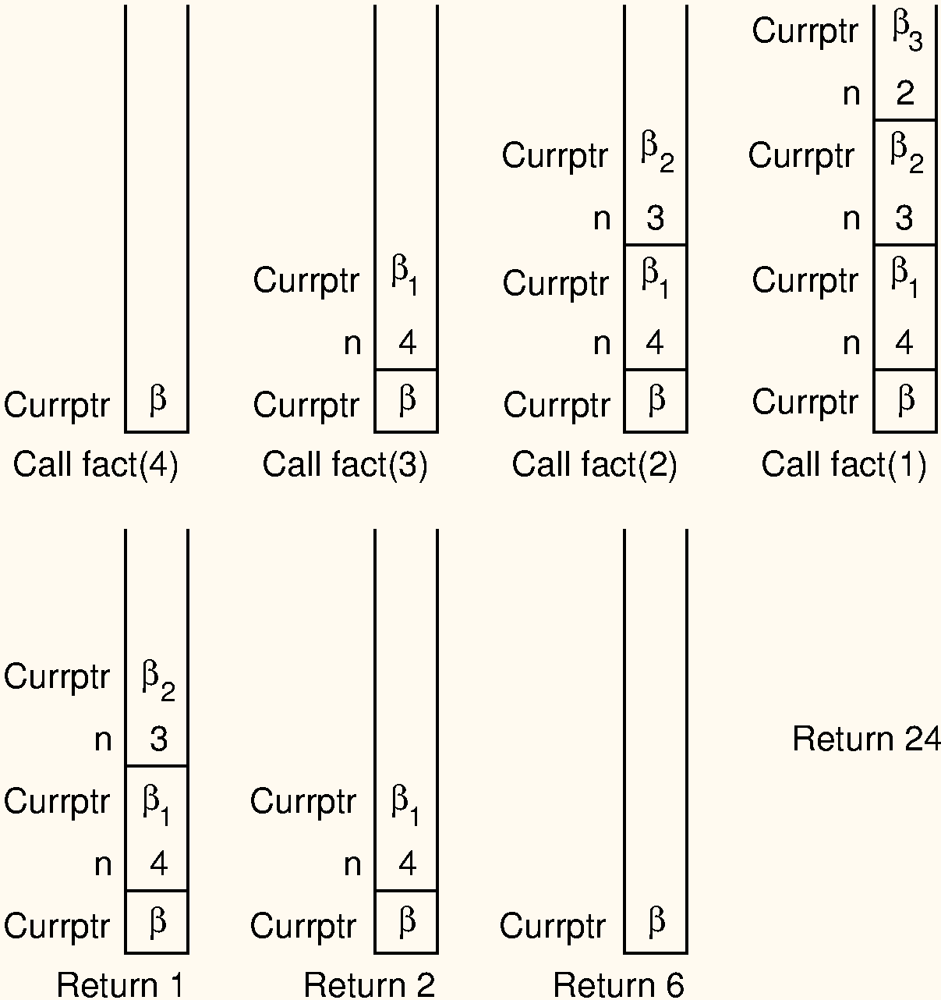

6.9* Implementing recursion using stacks
Perhaps the most common computer application that uses stacks is not even visible to its users. This is the implementation of subroutine calls in most programming languages. A subroutine call is normally implemented by pushing necessary information about the subroutine (including the return address, parameters, and local variables) onto a stack. This information is called an activation record. Further subroutine calls add to the stack. Each return from a subroutine pops the top activation record off the stack.
As an example, here is a recursive implementation for the factorial function.
// Recursively compute and return n-factoral (n!)
factorialRecursive(n):
if n <= 1: // Base case: return base solution
return 1
else: // Recursive call for n > 1
return n * factorialRecursive(n-1)Here is an illustration for how the internal processing works.

\beta values indicate the address of
the program instruction to return to after completing the current
function call. On each recursive function call to fact,
both the return address and the current value of n must be
saved. Each return from fact pops the top activation record
off the stack.
Consider what happens when we call fact with the value
4. We use \beta to indicate the address
of the program instruction where the call to fact is made.
Thus, the stack must first store the address \beta, and the value 4 is passed to
fact. Next, a recursive call to fact is made,
this time with value 3. We will name the program address from which the
call is made \beta_1. The address \beta_1, along with the current value for
n (which is 4), is saved on the stack.
Function fact is invoked with input parameter 3.
In similar manner, another recursive call is made with input parameter 2, requiring that the address from which the call is made (say \beta_2) and the current value for n (which is 3) are stored on the stack. A final recursive call with input parameter 1 is made, requiring that the stack store the calling address (say \beta_3) and current value (which is 2).
At this point, we have reached the base case for fact,
and so the recursion begins to unwind. Each return from
fact involves popping the stored value for n from the stack, along with the return
address from the function call. The return value for fact
is multiplied by the restored value for n, and the result is returned.
Because an activation record must be created and placed onto the stack for each subroutine call, making subroutine calls is a relatively expensive operation. While recursion is often used to make implementation easy and clear, sometimes you might want to eliminate the overhead imposed by the recursive function calls. In some cases, such as the factorial function above, recursion can easily be replaced by iteration.
Example: Factorial function
As a simple example of replacing recursion with a stack, consider the following non-recursive version of the factorial function.
factorialStack(n):
S = new Stack()
while n > 1:
S.push(n)
n -= 1
result = 1
while S.size > 0:
result = result * S.pop()
return resultHere, we simply push successively smaller values of n onto the stack until the base case is reached, then repeatedly pop off the stored values and multiply them into the result.
An iterative form of the factorial function is both simpler and faster than the version shown in the example. But it is not always possible to replace recursion with iteration. Recursion, or some imitation of it, is necessary when implementing algorithms that require multiple branching such as in the Towers of Hanoi algorithm, or when traversing a tree (Section 9.1.3). The Mergesort (Section 4.2) and Quicksort (Section 4.3) sorting algorithms also require recursion.
Fortunately, it is always possible to imitate recursion with a stack. Recursive algorithms lend themselves to efficient implementation with a stack when the amount of information needed to describe a sub-problem is small. For example, Quicksort can effectively use a stack to replace its recursion since only bounds information for the subarray to be processed needs to be saved.
Let us now turn to a non-recursive version of the Towers of Hanoi function, which cannot be done iteratively.
Use case: Towers of Hanoi
Here is a recursive implementation for Towers of Hanoi.
// Compute the moves to solve a Tower of Hanoi puzzle.
// Function 'move' does (or prints) the actual move of a disk from one pole to another.
towersRecursive(n, start, goal, temp):
if n == 0: // Base case
return
towersRecursive(n-1, start, temp, goal) // Recursive call: n-1 rings
move(start, goal) // Move bottom disk to goal
towersRecursive(n-1, temp, goal, start) // Recursive call: n-1 ringstowersRecursive makes two recursive calls: one to move
n-1 rings off the bottom ring, and
another to move these n-1 rings back to
the goal pole. We can eliminate the recursion by using a stack to store
a representation of the three operations that
towersRecursive must perform: two recursive calls and a
move operation. To do so, we must first come up with a representation of
the various operations, implemented as a data type whose objects will be
stored on the stack.
datatype Move:
start, goal, temp: Pole
datatype Towers:
n: Int
start, goal, temp: Pole
towersStack(n, start, goal, temp):
S = new Stack()
S.push(new Towers(n, start, goal, temp))
while S is not empty:
task = S.pop() // Get next task
if task is Move: // Do a move
move(task.start, task.goal)
else if task.n > 0: // Imitate TOH recursive solution (in reverse)
S.push(new Towers(task.n-1, task.temp, task.goal, task.start))
S.push(new Move(task.start, task.goal))
S.push(new Towers(task.n-1, task.start, task.temp, task.goal))We first enumerate the possible operations Move and
Towers, to indicate calls to the move function
and recursive calls to towersStack, respectively. Both
Move and Towers store the start and goal pole,
but Towers in addition stores the temporary pole, and the
number of rings. Thus, there are two constructors: one to store the
state when imitating a recursive call, and one to store the state for a
move operation.
The new version towersStack begins by placing on the
stack a description of the initial problem for n rings. The rest of the function is simply a
while loop that pops the stack and executes the appropriate
operation. In the case of a Towers operation (for n>0), we store on the stack
representations for the three operations executed by the recursive
version. However, these operations must be placed on the stack in
reverse order, so that they will be popped off in the correct order.